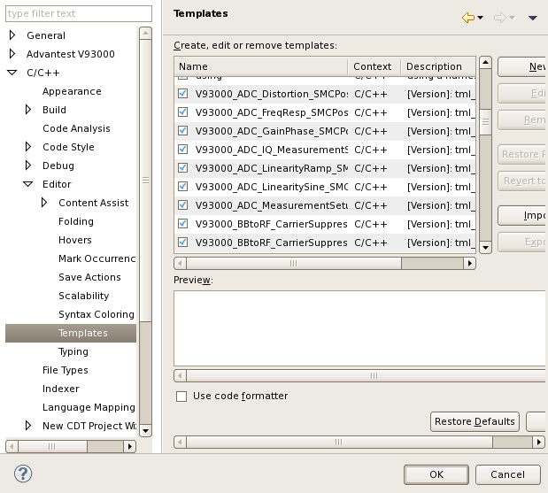

How to import a snippet file manually
To re-use your own snippet file for another device, you first need to import the snippet file you exported. (See How to export the snippets to an xml file.) Once imported, the content of the file is stored in the current workspace. If you change to another workspace, you need to import the file again to use the test method snippets.
About this task
A snippet file must be an xml file formatted as below. Below is a snippet file only
containing the snippet V93000_ADC_MeasurementSetup provided with
SmarTest.
<?xml version="1.0" encoding="UTF-8" standalone="no"?> <templates> <template autoinsert="true" context="org.eclipse.cdt.ui.text.templates.c" deleted="false" description="[Version]: tml1.2.0_6.5.4" enabled="true" name="V93000_ADC_MeasurementSetup"> string awgPin = "awgPin"; string vecVarForAwgPin = "vecForAwgPin"; string resultArea = "adcBitArea"; int resultAreaSize = 128000; string capturePinlist = "dig1,dig2,dig3"; ON_FIRST_INVOCATION_BEGIN(); Routing.pin(awgPin).connect(TM::SINGLE); Analog.AWG(awgPin).enable(); RESULT_AREA_CONFIG resultConfig(capturePinlist); resultConfig.appendArea(resultArea,resultAreaSize).activate(); SMC_DIGITAL_CAPTURE_TEST(100 ms, resultArea); Analog.AWG(awgPin).disable(); Routing.pin(awgPin).disconnect(); ON_FIRST_INVOCATION_END(); // kick off upload and caculation SMC_ARM(vecVarForAwgPin,resultArea,awgPin);</template></template>
Before you begin
Make sure the snippet file is ready to use.
Procedure
- To open the Templates page, click .
- Click Import and select the snippet file you want to import.
- Click OK.
Results
You can find that the snippets in the file are listed in the Templates page. The snippets are automatically checked on the left side, which means these snippets can be used by pressing Ctrl+Space. If a snippet is not checked, you can not use it by pressing Ctrl+Space.

What to do next
Insert the snippets in the test method
Functional changes
- Introduced before SmarTest 6.3.2
- SmarTest 6.5.4: Test method snippets are provided.